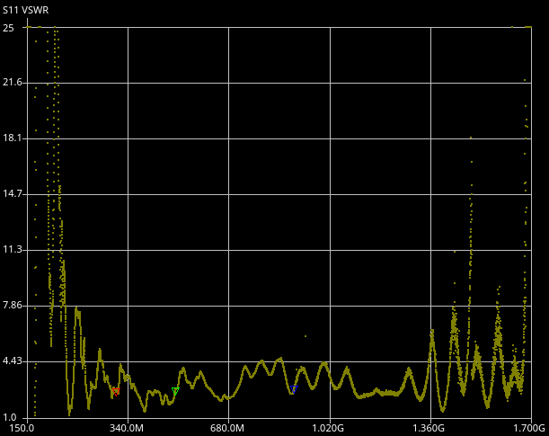

Flat-Pack 3D Printed Discone Antenna
Published: 8/31/2026

The finished discone antenna on its tripod mount
For one of my projects, DART [PAGE WIP], I needed an affordable, small-form-factor, and extremely wideband discone antenna. I was attracted to their inherent wideband characteristics but was discouraged by the high unit price for COTS units. As I was looking into alternatives, I could not shake the idea of making an extremely inexpensive one. One of the main price drivers for commercial units is the use of a complex threaded main hub that all the radials screw into. While this is great for portability and ease of assembly, complicated metal parts like that do no favors for affordability.

COTS discone antenna complex central hub
I decided to attempt a design that utilized 3D printing and sheet metal for the central hub, cutting down the cost drastically to around 10 dollars per unit while still maintaining great wideband reception characteristics. Targeting a frequency range of 100 MHz to 1.7 GHz to allow for reception across almost the entire RTL-SDR reception range, I calculated dimensions for the radials. The top disc is a simple design, just 8 radials contacting the upper sheet metal plate; the lower cone is slightly more complicated, using bent radials.
A bulkhead SMA mount is threaded into the bottom sheet metal plate, connecting to the cone radials. Then the center core is soldered to the top sheet metal, connecting to the disc radials. Everything is then sandwiched together and held in compression by 4 M3 socket head cap screws through the top. This simple design makes it easy to deploy and take down in the field. Another advantage of this design is that all the radials can be stored within the PVC mast and packed inside the tripod bag!


Side view of the discone assembly
Bill of Materials
| Item | Qty | Unit Cost | Total Cost |
|---|---|---|---|
| 7.5" 12 gauge galvanized steel wire | 8 | $0.11 | $0.88 |
| 23" 12 gauge galvanized steel wire | 8 | $0.34 | $2.72 |
| Custom sheet metal top/bottom | 1 | $1.77 | $1.77 |
| SMA connector | 1 | $1.60 | $1.60 |
| Filament & misc. hardware | 1 | ~$2.50 | ~$2.50 |
| Total | ~$9.50 | ||

NanoVNA Performance | "Not great, not terrible"
For the price, the discone antenna is not bad. There are some ugly resonances near the edges of the design range, but it is serviceable for DART. If people are interested, I have the full cut list, BOM, and all the 3D models available HERE on GitHub to make this discone antenna at home! I am sure there is a lot of room for improvement (off the top of my head, I am sure improving the contact area between the radials and the sheet metal would do wonders for RF performance), so forks and comments are very much appreciated!